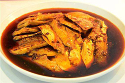
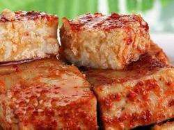

<
丰都县
秦代,属巴郡枳县;西汉,属益州巴郡枳县;东汉初,置隶属益州巴郡;献帝初平元年至建安五年(190年-200年)隶属益州永宁郡。东汉和帝永元二年(90年),分枳县地置平都县,是为丰都建县之始。 三国时期,蜀汉延熙十七年(254年),平都县并入临江县,属益州巴郡。 西晋,属梁州巴郡;成汉,属荆州巴郡;东晋,属梁州巴郡。 南北朝时期,刘宋时属益州巴郡;南齐时属巴州巴郡;南梁时属楚州临江郡;西魏、北周时属临州临江郡。 。 隋朝,开皇三年(583年),属临州临江县;大业三年(607年)属巴东郡临江县;恭帝义宁二年(618年),自临江县分出置丰都县,隶临州。 唐代,贞观八年(634年),隶山南道忠州;天宝元年(742年),隶山南东道南宾郡;乾元元年(785年),隶山南东道忠州;至五代前蜀、后蜀,隶忠州。 宋朝,宋真宗时,隶夔州路忠州南宾郡;徽宗政和元年(1111年),复并入临江县;南宁高宗绍兴元年(1131年),丰都县复置;度宗咸淳元年(1265年),隶夔州路咸淳府。 元初隶四川行省重庆路忠州;至元二十一年(1284年),垫江县并入丰都;至正二十二年(1362年),明玉珍大夏政权时,垫江分出。 明朝,洪武十年(1377年),丰都县并入涪州,属四川承宣布政使司重庆府;十三年(1380年)自涪州(今涪陵)分出复置县,改名酆都,隶重庆府忠州。 清代,康熙十三年(1674年),酆都县为吴三桂军占领;十九年(1680年)清军复收;雍正十二年(1734年),隶忠州直隶州;嘉庆七年(1802年),隶川东道忠州直隶州。 民国元年(1912年),隶四川省忠州;民国2年(1913年),隶四川行政公署川东道;民国3年(1914年),隶四川巡按使公署东川道;民国17年(1928年),直隶四川省;民国24年(1935年),隶四川省第八行政督察区。 中华人民共和国建立后,1950年,隶西南区川东行署区涪陵专区;1952年9月,隶四川省涪陵专区;1958年县名酆都改为丰都;1968年至1995年,丰都县隶四川省涪陵地区;1996年设立地级涪陵市,丰都隶属涪陵市。 1997年12月,丰都县正式由重庆直辖市管辖。 |
 麻辣鸡块麻辣鸡块起源于江湖菜,确切年代无从考究,但从民间传说又可看出一二。”
从汉朝开始,丰都便在平都山(今名山)大兴土木,在唐朝时修仙都观,即今天的“天子殿”。仙都观门前左右站立有高2米的鸡脚、无常二神:白面无常爷,迎孝接善;青脸鸡脚神,锁恶拿顽。
做法很简单,将鸡肉白水煮熟切成小块,再将红油,味精,香油,白糖,花椒面,酱油调匀,淋在鸡块上即可。而丰都的鸡块煮熟却不煮烂,肉质硬硬的却能轻易地用牙撕碎,极易入嘴。菜色泽红亮鲜艳,质地嫩气,味厚香浓,香辣味鲜
从汉朝开始,丰都便在平都山(今名山)大兴土木,在唐朝时修仙都观,即今天的“天子殿”。仙都观门前左右站立有高2米的鸡脚、无常二神:白面无常爷,迎孝接善;青脸鸡脚神,锁恶拿顽。
做法很简单,将鸡肉白水煮熟切成小块,再将红油,味精,香油,白糖,花椒面,酱油调匀,淋在鸡块上即可。而丰都的鸡块煮熟却不煮烂,肉质硬硬的却能轻易地用牙撕碎,极易入嘴。菜色泽红亮鲜艳,质地嫩气,味厚香浓,香辣味鲜
 丰都仙家豆腐乳:选用优质大豆,以白胡椒、沙仁、白叩等几十种名贵中药配制香料,坚持科学配方,精心加工,产品质量享有很高的声誉,畅销全国各地。米、小麦、食盐等原料,古法精酿,品质优良,豆尖中的蛋白质经发酵、水解后形成多种氨基酸等营养物质,通过天然酿造,达到红润香,有着浓郁的酱香及酯香气,味鲜美、醇厚、咸、甜适于酱卤,烩炒菜等实为调味佳品。含有多种氨基酸和维生素,营养丰富,开胃助食,特别对年老体弱及儿童有帮助消化、增强食欲、增加记忆、加速恢复健康的功能,实为消费者喜爱的佑餐调味品